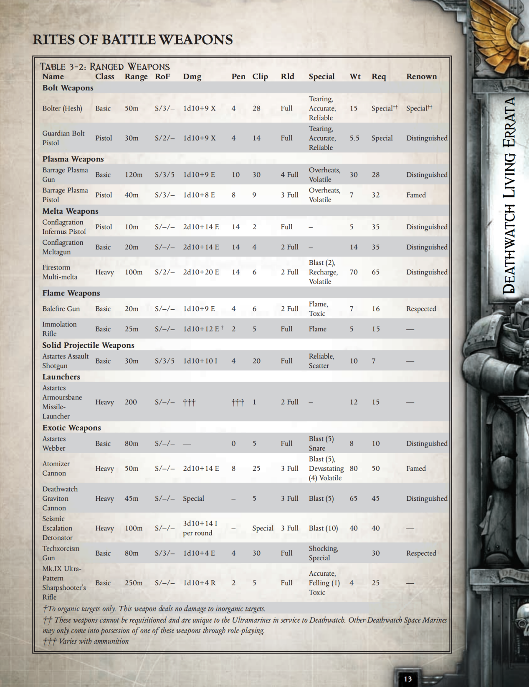
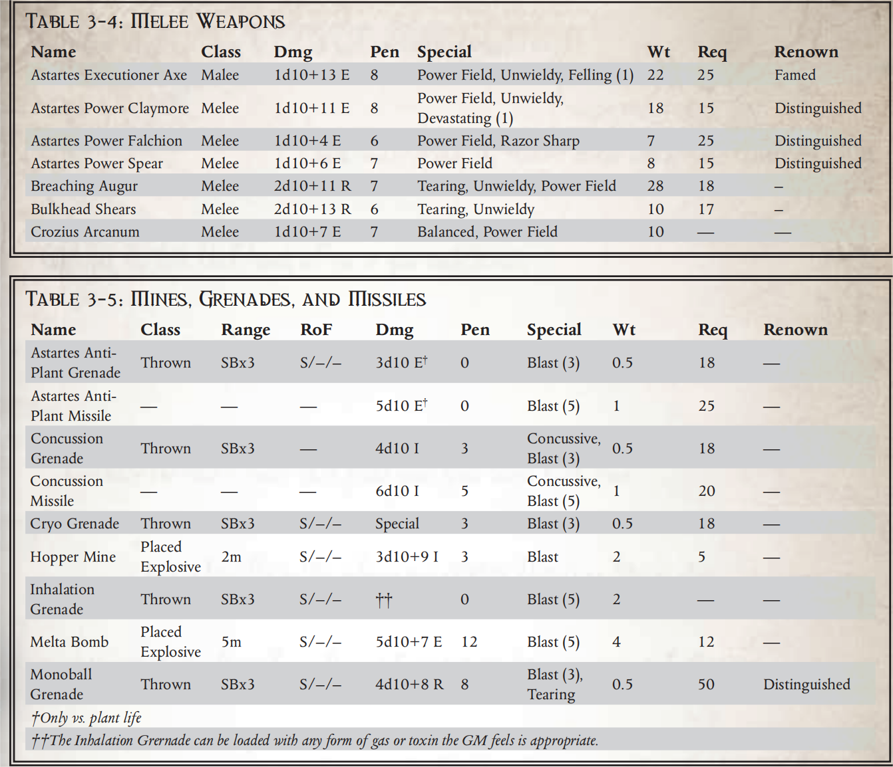

杰里科边区是一个饱受战争蹂躏的太空区域，随着庞大的阿基卢斯十字军向银河边缘碾压而来，不断发生的战斗和小规模冲突将其撕裂。十字军中最危险的部队是阿斯塔特星际战士，他们中的许多人已被借调到死亡守望的精英兄弟会中。在死亡守望的无数设施中，从守望站到强大的守望要塞埃里奥克，星际战士使用帝国武器库中的各种武器和装甲为战斗做好准备。
本章仅介绍了死亡守望可使用的无数战争工具中的一小部分。其中许多物品都是罕见、不寻常或在这个神秘组织之外完全不为人知的。然而，死亡守望的星际战士无疑是银河系中最精锐、最专业的部队之一；他们的装备也理应与之相匹配。
远程武器
"我的爆弹枪和我经历过的世界一样多。它曾让原始战士们惊叹不已，也曾战胜过一打又一打的弱小敌人，还经常被我的敌人低估。它让我受益匪浅。"
――太空野狼的战斗兄弟雷夫・寡妇制造者
帝国拥有庞大的军事力量，从机械神殿的泰坦军团到帝国卫队数不胜数的大规模军队。星际战士通常是所有攻击行动的先锋，他们携带着大量武器，渴望从敌人身上收割致命的战果。
爆弹武器
爆弹武器是一种大规模反应式自推进弹药，可在爆炸前穿透目标，以致命（通常也很混乱）的结果摧毁对手。
赫什式爆弹枪 Hesh-Pattern Bolter
赫什式爆弹枪于 M36 年首次出现在死亡守望军械库中。它最初是由 "全能神 "的信徒――贤者辛布里・贾米斯（Magos Cymbry Jamis）设计的，并赠送给了死亡守望，以感谢其为机械军团和神圣火星所提供的服务。这些爆弹枪工艺精湛，比同类典型武器更为小巧。由于其相对较小的尺寸和易于使用的特点，赫什式爆弹枪非常适合近距离作战，例如在建筑物内或虚空舰艇上，并受到车辆乘员、专门从事近距离作战的战术星际战士以及少量突击星际战士的青睐。除了精湛的工艺外，这些连发枪还配有一体式折叠枪托、运动预测器和猎物感应瞄准镜。赫什式爆弹枪自动获得最佳工艺（所有加成都已计入武器的统计数据中）。
**这些武器不能被征用，是为死亡守望服务的极限战士成员所独有的。其他死亡守望星际战士只能通过角色扮演获得其中一件武器。
守护者爆弹手枪 Guardian Bolt Pistol
这把精制的爆弹手枪是死亡守望星际战士身份的象征，也是他们的武器。任何佩戴这种手枪的星际战士都会被立即认定为是一名为保护人类免遭异种蹂躏而不惜一切代价的资深战斗人员。当颁发给值得尊敬的星际战士时，他的名字和事迹将由死亡守望技术兵在授勋仪式上刻在武器上。每件武器都是独一无二的，专门为获得者量身定制，当他返回自己的部队后，就可以将其保存起来。许多没有随主人一起入土为安的守护者爆弹手枪又回到了死亡守望的军械库中。这些 "弃儿"武器永远不会被重新发放，而是与它们主人的光荣事迹一起被珍藏在死亡守望的资料库中。
等离子武器
过热的星尘弹是一种极其危险的武器，无论是对目标还是（偶尔）对持枪者都是如此。
拦截等离子枪 Barrage Plasma Gun
这些稀有而珍贵的武器由杰里科边区死亡守望的科技星际战士严密看管，只发放给最尊贵的星际战士。拦截等离子枪是经过高度调整的快速发射武器，可以发射出巨大的毁灭性等离子能量。虽然它们能以半自动和自动模式发射，因此用途广泛，杀伤力巨大，但与一般等离子武器相比，它们耗能巨大，更容易过热。死亡守望星际战士认为，为了能向冲锋的异种群喷射等离子能量，这点代价并不算大。
拦截等离子手枪 Barrage Plasma Pistol
这些致命的等离子侧武器是杰里科边区死亡守望特有的，即使在他们神圣的军械库中也很少有。与较大的同类产品一样，拦截等离子手枪具有更高的射速，但代价是过热和能耗增加。
热熔武器
热熔武器由点燃成亚分子状态的气体形成一束狂暴的热束。这种光束可以穿透最厚的装甲板，是非常有用的反车辆武器。
灾火热熔枪 Conflagration Meltagun
恩索尔-卡里波斯（Enthor Calibos）是驻扎在埃里奥克观察站的火蜥蜴战团的技术海军星际战士，他制作了数量非常有限的这种小巧、高输出功率的热熔枪，在有幸使用过它们的死亡守望兄弟中颇受欢迎。这些强大的武器体现了其创造者的精湛工艺和对洁净火焰的深爱，在牺牲能量消耗的同时拥有更高的穿透力和伤害输出。
灾火地狱手枪Conflagration Infernus Pistol
这些威力强大的武器是灾火热熔枪的手枪级同胞兄弟。与较大的同胞兄弟一样，这些武器也是以增加能量消耗来换取更高的穿透力和伤害输出。这些武器是许多附属于死亡守望的火蜥蜴星际战士的最爱。
火风暴多管热熔 Firestorm Multi-Melta
千年前，一名被遗忘的死亡守望技术兵对损坏的马克西姆型多管热熔进行了战场改装，制造出了火风暴多管热熔，以较高的能量消耗和较短的射程换取了较高的伤害输出和短时间爆发的能力。虽然机械教通常对此类改装不屑一顾，但埃里奥克观察站的死亡守望技术兵获得了特殊许可，可以对数量有限的现有武器进行改装。如果使用多重热熔进行的攻击掷骰失败了五级或五级以上，武器就会过载，对与武器爆炸半径相等的区域造成与燃料罐中剩余装药数量相等的伤害。
火焰武器
火焰武器十分古老，近距离作战时往往令敌人闻风丧胆，它喷射出的钷元素会在火焰燃烧时点燃，使目标陷入液态火焰的地狱之中。
毁灭步枪Immolation Rifle
从严格意义上讲，"毁灭步枪 "并不是一种火焰武器，它是一种古老、极其罕见、几乎不为人所了解的武器，由艾里奥克守望要塞拥有，数量有限。它是一种残忍的杀伤性武器，能发射灼热的短程强热束。当用于轻装甲或无装甲目标时，光束会对暴露在外的火焰造成烧伤和水泡。这会给目标造成剧烈疼痛，如果伤害足够大，这些武器还能将敌人活活烤熟。虽然光束在对付有机物时具有惊人的杀伤力，但对机械、舱壁和武器等无机物却不会造成任何伤害。这使得它们在登船行动中对付大批船员时，以及在任何需要尽量减少附带损害的情况下都非常有用。虽然这些武器具有火焰特质，但它们无法点燃。
精焰枪 Balefire Gun
这种火炮使用高度精炼的钷燃料与多种放射性化合物混合，对兽人和其他具有自然再生能力的异种生物非常有效，既能灼烧敌人，又能对其进行辐照。由于会造成附带的环境破坏，精焰枪很少被使用，只有死亡守望才会使用这种枪来清理生命力特别顽强的异种。它们在控制和消灭兽人侵扰方面尤为有效。
固体射弹武器
固体射弹武器的技术可以追溯到古泰拉的最早历史，甚至更早。
阿斯塔特突击霰弹枪 Astartes Assault Shotgun
阿斯塔特突击霰弹枪虽然不像阿斯塔特爆弹枪那样在星际战士中具有标志性或广泛使用，但却是他们的侦察兵使用的一种功能强大的多用途武器。这些笨重的弹夹式霰弹枪可单发射击，也可使用半自动和全自动模式，并可使用从穿甲弹到威力强大的阻击弹等一系列特种弹药。突击霰弹枪最适合在城市和近距离作战中使用，也适合在登船行动中使用。
手榴弹和爆炸物
这类武器种类繁多,旨在对某一区域内的敌人造成伤害,通常携带毒气或电击等致命载荷。
阿斯塔特反植物榴弹和导弹 Astartes Anti-Plant Grenades & Missiles
这些手榴弹和导弹是帝国其他地方常用的反植物弹药的更致命版本，在杰里科边区的死亡守望侦察兵中很受欢迎。阿斯塔特反植物榴弹和导弹与它们更常见的表亲一样，在引爆时会释放出毒素、病毒剂、脱叶剂和抗真菌剂的恶毒混合物，即使是最强壮的植物也会在几分钟内变成恶臭的泥浆。这些武器通常用于封锁掩护区、清理着陆区和防御工事，但埃里奥克观察站的技术海军陆战队最近发现了使用这些武器的一个令人愉快的、前所未闻的好处。
千百年来，死亡守望与无数可怕的异种作战，其中有些异形更像是植物而非动物。在对付具有植物特征或实际上是有生命的植物的异种时，这些弹药会对目标造成韧性伤害，并无视任何护甲或其他伤害减免效果。
震荡手榴弹和导弹 Concussion Grenades & Missiles
这些手榴弹和导弹装有挥发性高爆炸药，在撞击时会产生强大的冲击波和震耳欲聋的巨大声响。事实证明，震荡榴弹在近距离（如船舱和建筑物内部）尤其致命。震荡导弹在摧毁防御工事方面非常有效，深受驻扎在埃里奥克观察站的帝拳兄弟的喜爱。
冰冻手雷Cryo Grenade
这种手榴弹只有在埃里奥克守望要塞的军械库中才能找到，内含一种化学凝胶，遇空气会凝固成固体。冷冻手雷引爆时会将敌人冻成灰烬，对易受寒冷影响的敌人具有致命杀伤力。冷冻手雷引爆后，会立即对爆炸半径内的所有物体造成 4d10+6 点能量伤害。任何受到攻击伤害的敌人都必须进行艰苦（-40）的韧性测试，以抵御被冷冻化学凝胶溅射时的灼痛。通过坚韧测试的敌人可以抵御攻击，不再受到伤害。失败者则会在 1d5 回合内持续受到 2d10 的韧性伤害，因为凝胶会慢慢失去效力，最终变成惰性。如果一个生物被冷冻手雷将韧性降至 0，他们就会被杀死，尸体也会被冻成固体。对尸体的任何进一步伤害都会导致其碎裂成数十块血淋淋的碎片。
吸入式手榴弹 Inhalation Grenade
吸入式手榴弹在没有装填弹药的情况下，只不过是一个由冲击力激活的加压空气罐。然而，这些无害的装置都包含一个通风芯，可以根据使用者的选择装入化学物质，使其可以释放像信号烟雾一样无害或像基因噬菌体毒素一样致命的物质。吸入式手榴弹的有效载荷会影响爆炸半径内的所有人（没有环境密封装备保护）。不过，这种投掷方式的分散性会降低内装物的效果，使受影响的目标在通常情况下进行的抵抗测试中获得 +10 的加分。
跃雷 Leaper Mine
跃雷是杰里科边区死亡守望特有的一种凶残的杀伤性地雷，通常部署在对付兽人和泰伦等成群结队的敌人时。当它们的近距离传感器探测到 5 米范围内的生物迹象时，这些地雷就会跃起约两米，并向十米范围内喷射出恶毒的弹片云。少量放置得当的跃雷可以在大批敌人反应过来之前将其消灭。跃迁者地雷没有定时器，只要接近生物就会触发。
热熔炸弹 Melta Bomb
用于攻破船体、重装甲车辆和炮台。热熔炸弹的使用方法是将其固定在墙壁、船体或舱壁上,发射出狂暴的高强度热熔光束,即使是最厚的装甲也会被瞬间击穿。虽然它们不是作为杀伤人员地雷设计的,但当热熔炸弹的光束射入房间或隔间时,任何不幸处于热熔炸弹表面另一侧的人都会受到一半的伤害。熔弹带有一个可设置为一小时的内置计时器。如果用于设置热熔炸弹的爆破测试失败超过四度,炸弹会立即爆炸,对爆炸半径内的所有人造成全额伤害。
单球手榴弹 Monoball Grenade
这是一种来自死亡守望地窖深处的古老杀伤性手榴弹,这些凶残的手榴弹与异端的灵族技术有几分相似。这些武器只不过是在小型炸药上紧紧包裹了数十米长的 "Monofi Lament",其设计非常类似于用来摧毁大规模敌军阵型的 "跃雷"。手榴弹不是用爆炸力来杀伤敌人,而是在引爆后溶解成一团不断膨胀的快速移动的 单丝云,保证能撕碎没有装甲和装甲薄弱的敌人。这种手榴弹的杀伤力极强,但不幸的是,这种手榴弹的供应量极少,死亡守望的技术牧师对其严加看管。
发射器
装甲灾祸导弹发射器 “Armourbane” Missile Launcher
装甲灾祸导弹发射器（杰里科星区死亡守望部队独有）是一种蹲式宽炮管发射器，身高只有星际战士的一半。然而，相似之处也仅此而已，因为防空导弹发射器是用来击落空中目标的，而装甲灾祸发射器则专门对付重装甲地面部队。这种发射器通常装载猎杀者-杀伤型破甲导弹，并配有一系列占卜仪和特殊机构，可引导导弹顺利飞向目标。装甲灾祸导弹发射器可为杀戮小队提供比标准强力打击导弹发射器更强的防护，以抵御装甲车辆和大型异型兽的攻击。安装在装甲灾祸发射器上的特殊占卜阵列结合了猎物感应瞄准镜和红点激光瞄准镜的优点。在攻击地面目标时，这些功能强大的占卜仪和特殊的地面跟踪器可为弹道技能测试带来 +20 的加分。在紧急情况下，军械发射器可以用来对付飞行中的敌人，但它并不十分适用，而且在使用时会失去弹道技能测试的 +20 加值。
异形武器
死亡守望的武器库中有许多奇特的武器，其中一些是由帝国制造的，还有许多是由外星种族通过奇异的手段制造的。在任务中，死亡守望星际战士会罕见地选择携带这些奇特（但非常有效）的武器，以确保取得胜利。
阿斯塔特捕网枪 Astartes Webber
当战斗兄弟发现有必要活捉一个目标，或者有时只是让顽固但无辜的平民丧失行动能力时，捕网枪就能提供一种快速有效的手段，让正在逃跑的刺客或一小群市民丧失行动能力。该武器由大量细丝组成，细丝膨胀后形成一张粘性极强、几乎无法破开的网。当目标挣扎时，细丝收缩，如果他试图逃脱，细丝就会进一步将他困住。除了捕网武器的正常效果外，每次被禁锢的角色在力量或敏捷测试中失败，都会在以后的测试中受到累计 -10 的惩罚。如果超过-30，受害者就会被牢牢困住，再也无法逃脱。网状物会自行分解，并在 1d5 小时后消失。
雾化炮Atomizer Cannon
雾化炮是黑暗科技时代的遗物。它是杰里科边区死亡守望星际战士使用的最恐怖的战争武器之一，外形酷似笨重的多管热熔，背部安装有重型防护罩的动力装置。这种武器能喷射出大量辐照粒子，有效熔化生物，将其单个细胞炸得四分五裂，从内部活活烧死。据了解，雾化炮甚至能在瞬间将金属和陶瓷烧成灰烬，然后将其彻底分解。死亡守望中只有少数几件这种可怕的武器，而且它们被严格禁止用于对付人类。许多战团拒绝使用它们，声称所使用的技术是极端异端的，并以道德为由表示反对。
除了更明显的效果外，雾化炮还会辐照爆炸区域内的一切物体――这在武器简介中列出的 "有毒 "特质中有所体现。
死亡守望重力炮Deathwatch Graviton Cannon
死亡守望重力炮是埃里奥克守望站的技术海军星际战士对现有武器进行的又一次快速改装，它是一种输出功率更大、杀伤力更强的普通重力炮。普通重力炮只有一种设置，可影响相当大范围内的重力，而死亡守望重力炮还能将能量集中到一束连续密集的重力波中。
当重力炮发出连续的聚焦光束时，它能锁定一个"巨型"（Enormous）目标。攻击成功后，目标必须进行艰苦（-40）的力量测试，否则就会被击倒并压制，造成 1d10 点冲击伤害。一旦被压制，目标每轮都会受到 1d10 点的冲击伤害，伤害无视护甲，直到目标逃离光束或被压死。在这种模式下使用时，重力枪可以维持 2d10 回合的重力光束，直到能量耗尽需要重新装弹。
当在大范围设置下使用时，在其作用范围内的所有物体都会在 1d10 回合内受到极端重力的影响，并且必须进行一次非常困难（-30）的力量测试，否则就会被击倒并压制。力量测试失败的生物从站立位置被抛向坚固物体或表面，身体会受到 1d10 点冲击伤害。这种伤害可能会根据生物被抛入的表面（带电的、布满尖刺的、有尖角的）或生物被抛出或跌落的距离而增加。在被这些武器压制的情况下移动或尝试任何身体动作，在大范围设置中需要进行力量50（非自然（x2））的对抗力量测试，在聚焦光束设置中需要进行力量70（非自然（x2））的对抗力量测试。死亡守重力炮还可能粉碎易碎物体、使薄弱的墙壁或结构倒塌、干扰机械、损坏车辆、使储油罐破裂，或造成 Gm 认为的任何其他混乱。
地震发生器 Seismic Escalation Detonator
这些地震发生器最初是作为采矿和勘探工具而设计的，后来被埃里奥克观察站的死亡守望技术海军陆战队改装成武器。该装置由一个人头大小的强力声波发射器组成，通过一根大钉固定在坚固的地面或防御工事的墙壁上。一旦安装到位，它就会发出超低频声音，在地面和建筑物中产生共振。这些装置由可充电的电源盒供电，持续工作时间约为一小时。装置运行的时间越长，震动的威力就越大，对周围地形和结构造成的破坏也就越大。每使用十轮，发生器的伤害就会增加 1d10。任何试图接近正在运行的地震波发生器的人都必须进行一次非常困难（-30）的敏捷测试，否则会立即被击倒，并受到该装置当前所造成伤害的一半。大规模使用这些工具，可以在几分钟内摧毁最坚固的堡垒和最高的建筑。
科技驱魔枪Techxorcism Gun
这些武器对高度科技化的异种(如钛星人)非常有效,在其他死亡守望武器中,它们的独特之处在于能够直接攻击机魂。它们被俗称为 "科技驱魔枪",是一种噼啪作响的亮蓝色能量弹,不仅能破坏机器的身体,还能伤害甚至驱赶其机器灵魂。这些武器如果击中暴露在外的肉体,甚至可以眩晕生物,而且所有科技驱魔武器都具有 "震撼"特质。每当玩家使用科技驱魔枪对目标造成致命伤害时,请根据“缠绕场效应 "进行掷骰。
即使是在死亡守望博学的工程师中,这些武器究竟是原生技术还是异种起源也是个未知数。无论其来源如何,它们已被证明是一种宝贵的反异种工具,并被征用或分配给面临已知技术威胁的杀戮小队。科技驱魔武器几乎可以影响所有已知异种的机器灵魂,但有一个例外。兽人的技术可以被这些武器损坏,但他们的机器灵魂似乎对 Ep 武器的特殊属性免疫。到目前为止,死亡守望技术海军陆战队的研究还无法解释这种现象。
极限式 Mk. Ix 狙击步枪 “Ultra” Pattern Mk. Ix Sniper Rifle
极限式Mk.Ix 全长两米多，重达近 40 公斤，它的威力和效率同样令人生畏。Mk.Ix 是一种重型针式狙击步枪，用于死亡守望的远程杀伤和反人员反器材工作。凭借长枪管和大倍数瞄准镜，Mk.Ix 能让死亡守望的神枪手在极远距离上以惊人的精度锁定目标。Mk.Ix 是一种备受尊敬和推崇的武器，在许多死亡守望杀戮小队中，它经常被选为星际战士狙击手的首选武器。每把 Mk.Ix 都有以下完整系统：
量身定制： 每把 Mk.Ix 都是为配给它的战友量身定做的。武器的枪托和护手与枪主的体型和射击姿势相匹配，使狙击步枪的携带、瞄准和射击就像手指点地一样轻松自然。虽然这提高了狙击步枪的精确度，但定制的武器让人感觉不舒服，如果不进行严重改装，其他人几乎不可能使用它。每辆 Mk.Ix 还配备了一套特殊的安全系统，该系统根据主人的基因密码进行编程。该系统由武器枪托中的感应垫组成，与星际战士射击手所戴手套手掌中的匹配垫相接触。星际战士的基因数据随后被传输到武器的逻辑分析仪并进行分析。如果逻辑分析仪阵列感应到武器主人，狙击步枪就会正常工作。如果有其他人试图使用该武器，控制仪将关闭狙击步枪的装置。这将导致狙击步枪无法使用，直到真正的主人再次拿起狙击步枪。
30倍瞄准镜：这款功能强大的望远瞄准镜可以让神枪手在极远距离上与敌人交战。它是一种望远瞄准镜。
消音器：这种消音器和枪火隐藏器的组合可以减少枪口焰和针刺武器的特征报告。任何通过视线或声音定位神枪手的感知测试都会受到额外的-20惩罚，并且只能在正常距离的一半进行测试。
高度精确： 凭借长枪管、整体后坐力补偿器和枪管下的双脚架，Mk.Ix 是一种精确度极高、平衡性极佳的武器。Mk.Ix 具有 "精准 "品质，其涡轮化学针弹药还具有 "毒性 "品质。
阿斯塔特武器：虽然这种狙击步枪属于异形类别，但对于星际战士来说，它属于固体射弹武器。这意味着星际战士只需具备 "阿斯塔特武器训练天赋"即可使用该武器。